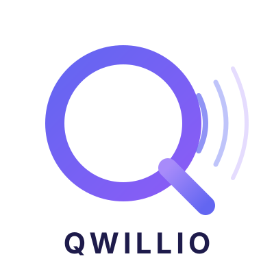
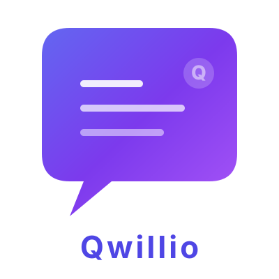
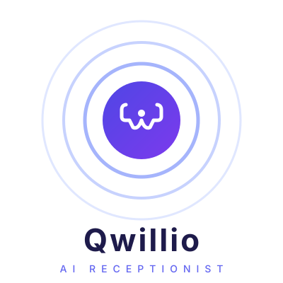
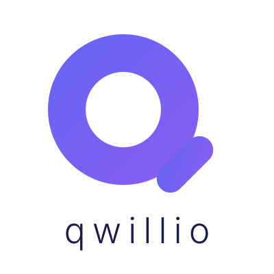
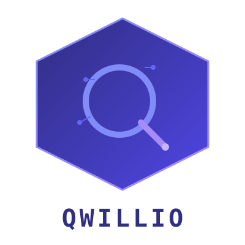
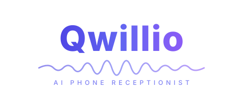
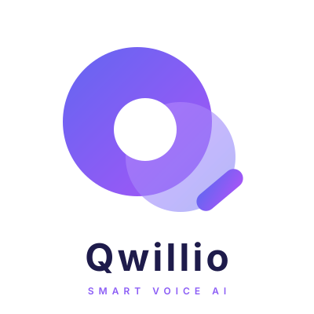
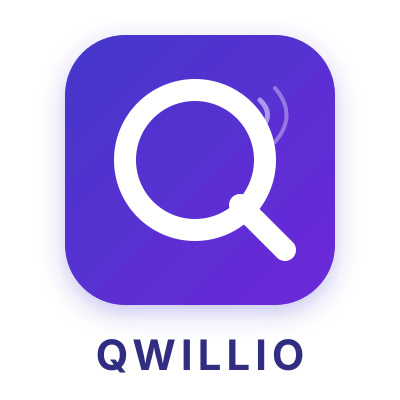
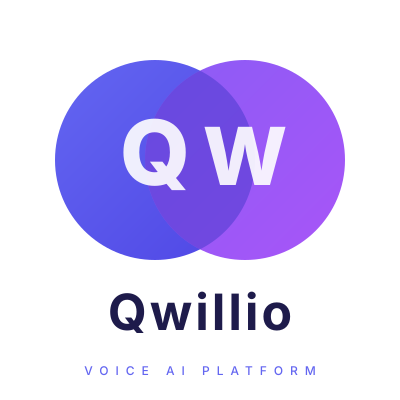

10 propositions de logos pour la marque Qwillio

Q stylise avec des ondes sonores emanant vers la droite. Represente la voix IA et la communication telephonique.
ICONE + WORDMARKQ inscrit dans un bouclier. Evoque la protection, la fiabilite et la confiance pour les entreprises.
ICONE SEULE
Bulle de dialogue avec lignes de texte animees. Represente la conversation IA en temps reel.
ICONE + WORDMARK
Icone telephone au centre d'ondes concentriques. Symbolise la receptionniste IA qui repond aux appels.
ICONE + WORDMARK + TAGLINE
Grand Q circulaire rempli avec espace negatif. Design ultra-epure et moderne, typographie fine.
MINIMALISTE
Q inscrit dans un hexagone avec elements de circuit. Evoque la technologie, l'IA et l'innovation.
TECH / CIRCUIT
Typographie elegante avec onde sonore integree sous le nom. Simple et identifiable.
WORDMARK HORIZONTAL
Cercles superposes formant un Q avec effet de transparence. Moderne et artistique.
ABSTRAIT
Q dans un carre arrondi avec ombre portee et signal. Parfait pour icone d'app ou favicon.
APP ICON
Initiales Q et W dans deux cercles entrelaces. Represente la synergie entre la marque et la technologie.
LETTERMARK DUO